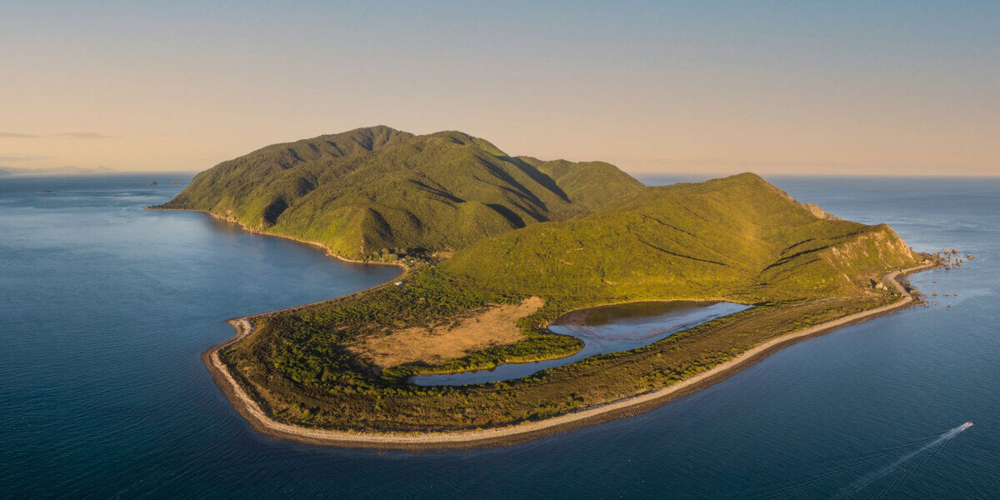

Kāpiti Island
A protected nature reserve visible from the coast, Kāpiti Island is home to native birds and restored forest. Access is by boat; visits are guided and limited, keeping the island quiet and wild.
A chance to step into a world where birdsong and forest take over.
→ Explore Kāpiti Island